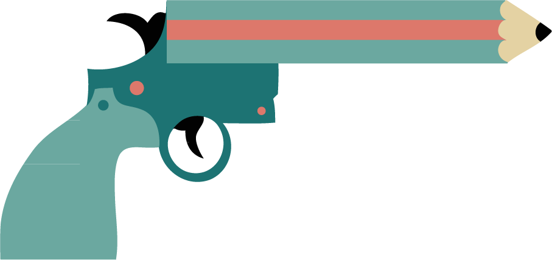

Občasnik / Terorizem je terorizem je terorizem
Terorizem je terorizem je terorizem
8. 1. 2015

Kakšna je razlika med naslovko Bitchcrafta, ki je konec 90-ih užalila verska čustva katolikov, in karikaturami, s katerimi Charlie Hebdo žali verska čustva muslimanov? Nobene, porečete, le da je prvi primer zanetil zgolj besedno, drugi pa kar pravo oboroženo državljansko vojno. V trenutku, ko to ugotovitev prilepimo na prevladujočo zahodnjaško moralo, se zdi, da smo naleteli na eklatanten dokaz o tem, da je na krščanski tradiciji utemeljena Evropa (in mi z njo) bolj civilizirana, pacificirana, kultivirana in oh in sploh, medtem ko so islamisti spet dokazali, da je muslimanski svet vreden vsake bombe, ki prileti tja. Na položaje ISIS ali pa, recimo, v Gazo, who cares.
{kind=link}
Tudi slovenski novinarji so na Prešernovem trgu prikimali, da je sekularna demokratično-cinična pravica do drkanja vsega in vsakogar aplikabilna v obeh zgoraj omenjenih primerih in širše. Gre za svobodo izražanja, demokracijo, različnost! Vsi smo Čarli, vsi smo Strelnikoff! Kot se pogosto potrkajo po prsih domači prvobranilci vsakršnih nesramnosti, se zdi, da satirični časopis Charlie Hebdo uteleša moto: "Zajebavamo vse in to je šele prava enakopravnost, to je šele pravi pogoj demokracije."
Toda razlika med omenjenima primeroma je v resnici ogromna. Evropi domača krščanska morala je obsedena z vizualnim. Uživamo v upodabljanju tako svojih verskih in (v sodobni sekularizirani različici) pop idolov kot tudi samih sebe. Kristus, če bi znal, bi delal selfije in na Instagramu konkuriral s Kimino zadnjico! V primeru Strelnikoff je torej za vernike žaljiva zgolj in samo vključitev podgane, saj je vsebinska, konkretna in zvedljiva na implikacijo, da je božji sin v resnici glodalec.

Medtem pa neka druga, enako pomembna in prav tako nezavedno zavezujoča morala, kot je naša, eksplicitno prepoveduje vsakršno figuralno upodobitev verskih tematik. Glavni problem karikatur o islamu torej ni njihova kritična vsebina, pač pa samo dejstvo, da obstajajo. Torej ne gre za to, da se "nori" muslimani niso sposobni smejati šalam na lasten račun, pač pa bi (vsaj) v teoriji enak odziv povzročila tudi vsebinsko pro-islamistična karikatura. Za muslimane sovražni govor v tem primeru ni kritična šala na Alahov račun, pač pa Zahodnjakom samoumevna predpostavka, da jo lahko ne le izrečejo, pač pa tudi narišejo.
V tem smislu je jasno, da eno najmočnejših karikatur, ki je nastala kot odziv na dogajanje v Franciji, Zahodnjaki razumemo kot odlično, muslimani pa kot slabo šalo.
Vic ni več smešen, ko ga začnemo pojasnjevati, pa vseeno: nas zabava dejstvo, da glagol draw (risati) uporabljamo tudi kot metaforo za potegniti orožje, muslimanov pa ne, saj lahko tudi Charlie Hebdojevo risanje vzamejo kot metaforo za vihtenje pištole.
Svoboda izražanja je politični princip, ki omejuje poseganje države v izrekanje, nikakor pa ni individualna pravica javnega obračunavanja z nasprotujočo moralo. V tem smislu je tudi samocenzura bistveno bolj problematična, kadar skuša brati željo oblasti, ne pa, kadar prihaja z naslova vljudnosti. Takrat pravzaprav ne gre za (samo)cenzuro, pač pa za omejevanje prakticiranja lastnih pravic zaradi trka ob pravice drugega.
V včerajšnjih Odmevih je dr. Edvard Kovač nekako optimistično napovedal, da se Francija ne bo odrekla niti multikulturalizmu niti svoji tradiciji, espiritu, satiri, in pri tem popolnoma zanemaril dejstvo, da je takšen izid enostavno nemogoč. Tradicija francoskega espirita in satire je namreč tradicija stare Evrope, ki terja merjenje tujih vrednot po lastnih merilih. Charlie Hebdo svojo svobodo izražanja utemeljuje na tem, da med protagonisti svojih karikatur ne dela nikakršnih razlik. Toda razlike predhajajo to svobodo in so - najbolj splošno rečeno - razlike v načinu naseljevanja sveta. Tako za razliko od karikatur, ki smešijo npr. džankije, katolike, Kitajce, geje itd., tiste karikature, ki smešijo islam, ignorirajo mnogo več kot dolžnost spoštovanja nekih partikularnih verskih naukov, osebnosti ali vsebin, pač pa napadajo paradigmatske temelje kulturne tradicije islama. Kot neoliberalna maksima enakost možnosti ignorira raznolikost izhodišč, velja tudi tu. Če bi želeli medkulturno informirano enakopravno smešiti vse, bi si za smešenje islama pač morali izbrati drug medij.
Slon in Sadež: Taliban Reggae
Antropološki uvid in razlaga konteksta seveda nista in ne želita biti opravičilo za kakršno koli prelivanje krvi, še posebej pa ne za tako strahopeten zločin, kot se je zgodil v Franciji, omogočata pa spoznanje, da nas je lahko upravičeno strah prihodnosti. Vsaj dokler peresa, ki riše, ne bomo razumeli (tudi) kot meča (ali pač pištole), ki ubija, bomo v isti miselni paralaksi delali tudi razlike med lasersko vodenimi bombami v Bagdadu in minometi v Parizu. Ampak, če parafraziramo Gertrude Stein: terorizem je terorizem je terorizem … kjerkoli že pač.
Naj končamo v s popkulturno metaforo. Zdi se, da se nam je zgodilo nekaj podobnega kot nasprotniku Indiane Jonesa v zgornjem odlomku: medtem ko je nekaj fensišmensi telovadil z nekim zastarelim orožjem, ga je Indy nekaj časa opazoval, potem pa enostavno ... ustrelil.